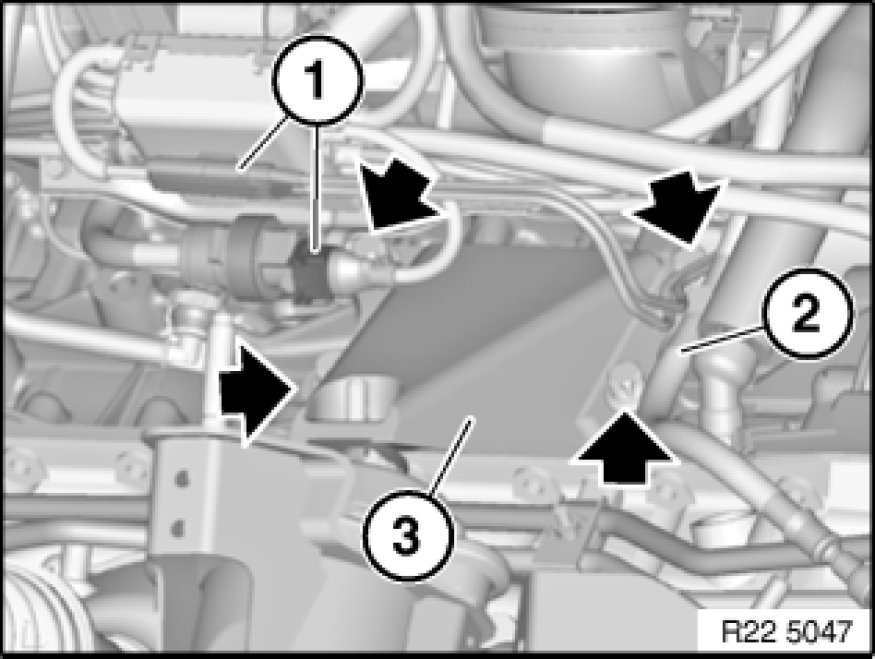

Replacing Left Engine Support Arm (N52K)
22 11 110 - Replacing left engine support arm (N52K)

Necessary preliminary tasks:
- Secure engine in installation position Securing Engine in Installation Position.
- Remove reinforcement plate Service and Repair.

Disconnect connector (1).
Detach oil line (2) from engine support arm.
Release screws and remove engine support arm (3).
Tightening torque 22 11 3AZ Specifications.